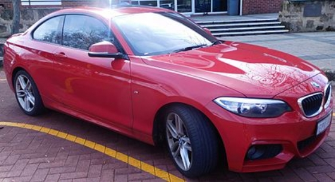

M2 - F87 Coupe (2015 to present)
In October 2015, BMW revealed the new flagship 2 Series, the M2. It is an indirect successor to the 1 Series M Coupé.
The M2 Coupé began production at the end of 2015, and went on sale in the United Kingdom during April 2016. The car is powered by the BMW N55B30 engine, tuned for 370 PS (272 kW; 365 bhp).


With the six speed manual gearbox, the M2 accelerates from 0 to 100 km/h (62 mph) in 4.5 seconds, or 4.3 seconds if equipped with the seven speed DCT automatic.[15] The top speed is electronically limited to 250 km/h (155 mph), but the limiter can be raised to 270 km/h (168 mph) as an option.
Powered by a twin scroll 3.0 litre straight six, the M2 boasts 272 kW (365 hp) at 6500 rpm through to a 7000 rpm redline.
Torque is listed at 465 N⋅m (343 lb⋅ft) between 1400-5560 rpm, while an overboost function can increase torque to 500 N⋅m (369 lb⋅ft) between 1450-4750 rpm.